Allē Admin: User Journey Maps
How I used user research and journey mapping to help a 150+ person customer support team be heard, then turned the method into a template a whole design organization could use.
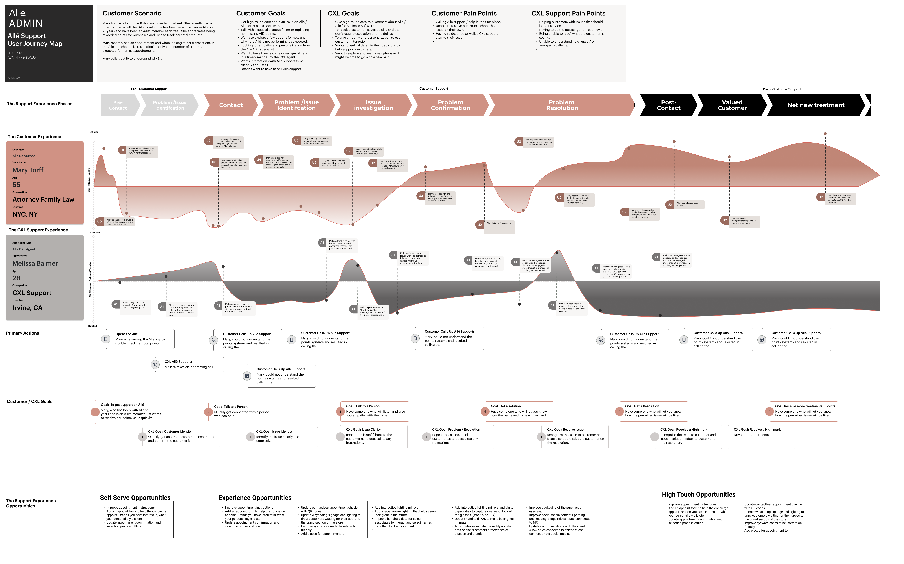
The short version
Over about a year and a half on Allē Admin, I used user research and user journey maps to put a 150+ person customer support team at the center of the squad's decisions. The journey map then grew into a template that I taught to 25+ designers and shared across a 45+ person UX and product design organization.
The support team handles about 25,000 customer calls a month. When the people doing that work are well understood, the product built for them gets better, and so does every conversation they have.
- 150+support team members I designed for
- ~25,000customer calls a month they handle
- 25+designers I trained on the template
The challenge was familiar. A busy squad of product and engineering was shipping fast, and the real work of the support team was easy to lose in the pace. My job was to make it visible and keep it that way.
Challenge
Putting the support team first
From 2021 to 2023, Allergan Aesthetics worked with Bttr to improve its rewards program. As a Sr. UX/Product Design consultant, I helped establish the Allē rewards program. Allē Admin was my core responsibility, alongside Alle.com, the Allē app, and the strategy for what came next. Our wider consulting team of about 12 UX designers worked with internal stakeholders and product teams to modernize and extend the platform.
The users of Allē Admin are the Allē customer support team: more than 150 people managing roughly 25,000 customer calls a month. At that scale, small frictions add up fast. I wanted every design decision for Admin to start from how that team actually works, not from what we assumed.
I worked inside the Admin squad: one PM, one TPM, four front-end developers, and three back-end developers. Research and journey mapping were how I gave that group a shared view of the people we were building for.
Research
Listening, then making it reusable
I started with the people. I gathered what the support team told us and organized it in Dovetail so it became searchable insight, not a pile of notes. [Add: how many sessions, who you spoke with, and the research methods.]
I used Zoom to talk with users, Dovetail to tag and synthesize, and Airtable to keep the details organized. The goal was never a report that sat in a folder. It was evidence the squad could point to when they made decisions.
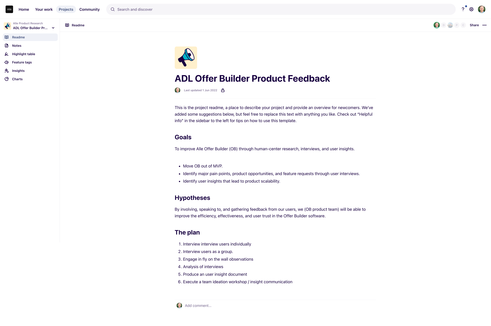


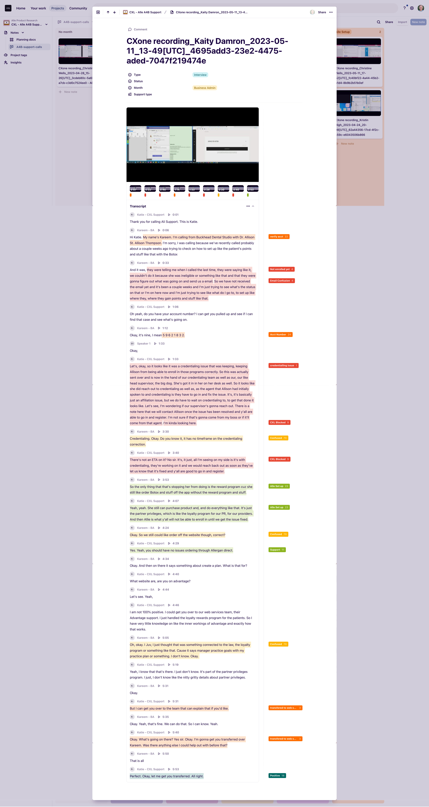
UX Audit
Mapping what already existed
In parallel, I joined the work on information architecture updates and user flow mapping for the existing Allē products. I audited the flows in FigJam, which gave me a clear view of how the pieces connected while I supported the Admin squad.
That audit did a second job. It helped me, and the team around me, build a deeper understanding of the design system and where the products worked together or didn't.
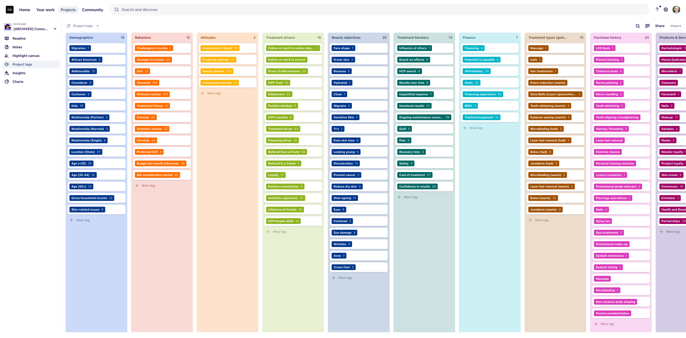
Journey Maps
Turning research into a shared story
I brought the research and the audit together in user journey maps. Each one followed a role in the Allē for Business world through what they do, what they feel, and where the experience breaks down.
Four maps came out of this work: Allē for Business Owner Support, Allē for Business Admin Support, and two for Location Manager Support. [Confirm the four map titles. The site lists Location Manager Support twice.] Some were still in progress when I handed them off, and I kept them in the same shared format so they could keep growing.


Education
Making the method a team habit
The journey map worked, so I made it easy for others to use. I evolved it into a templated platform in Figma that the whole UX and product design team could pick up. I added instructional sections right in the resource file, so the guidance lives next to the work.
Then I taught it. I gave a presentation on how the template works, why it is effective, and how to use it well, to 25+ UX designers. I shared the template with the full 45+ person UX and product design organization.
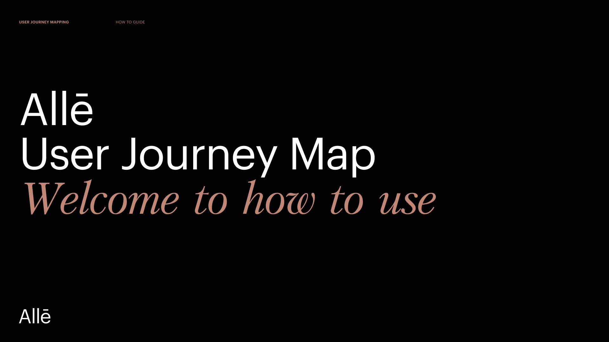
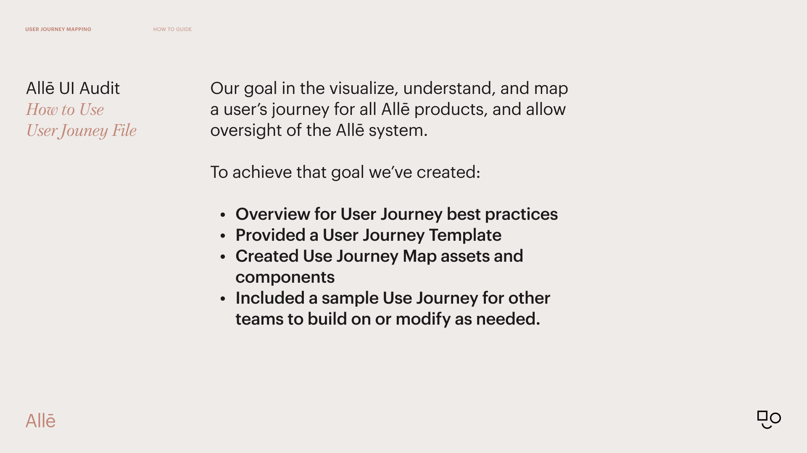
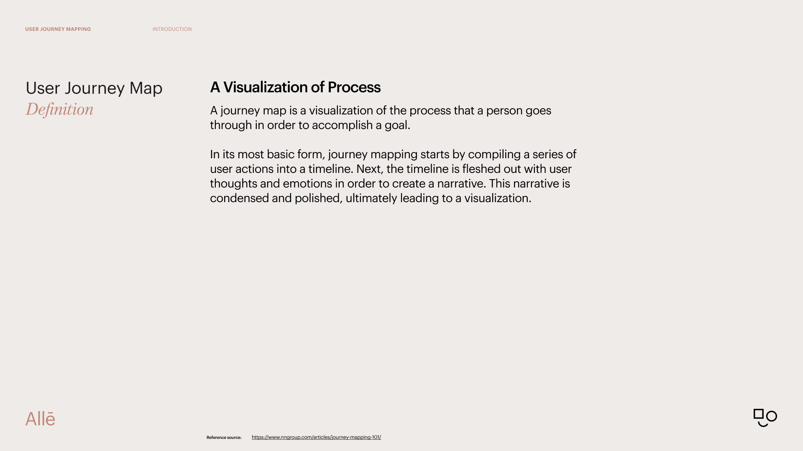
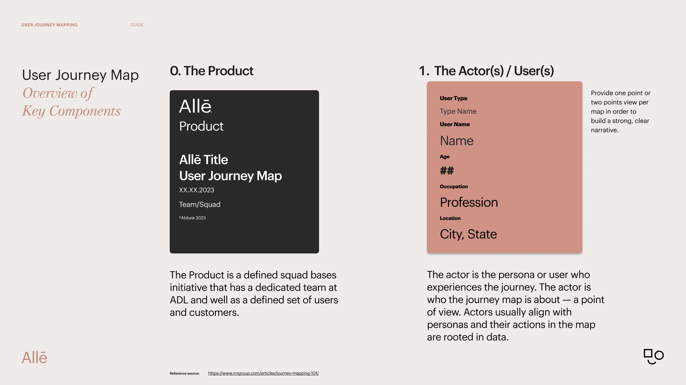
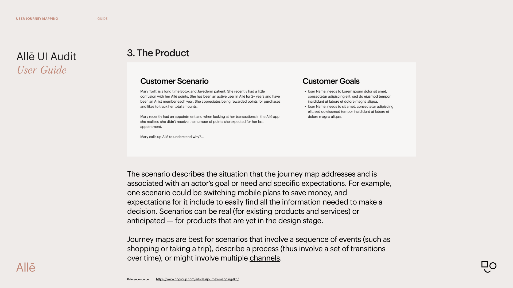
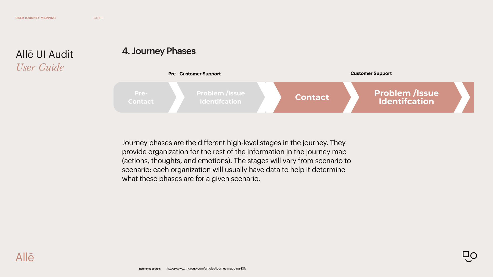
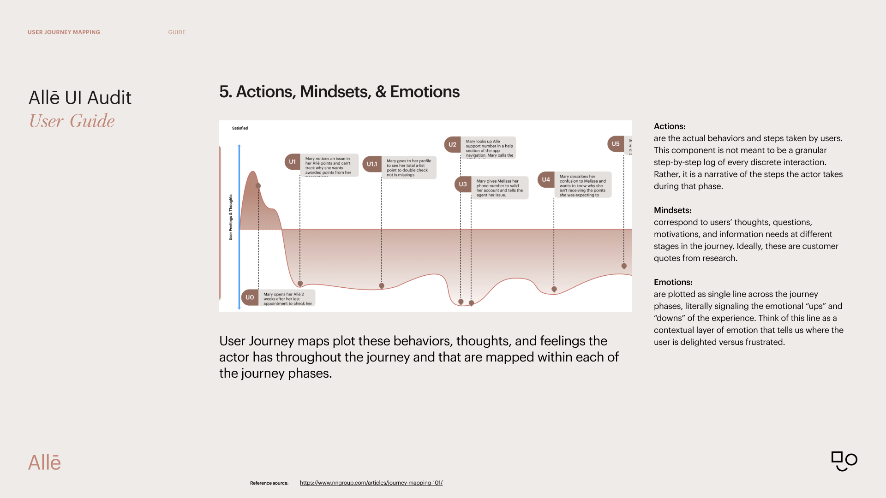
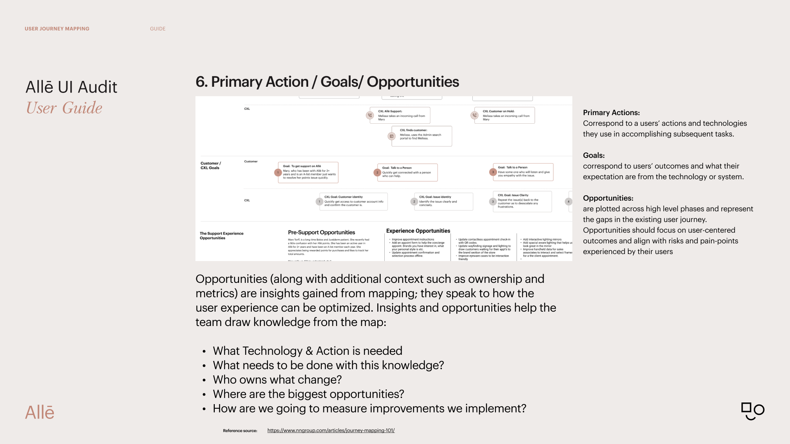
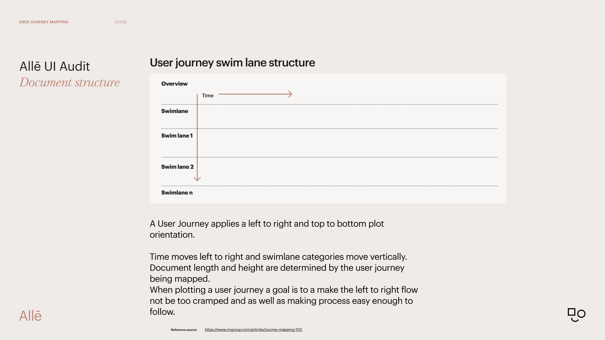
Outcomes
What changed
- Faster team onboarding and problem identification.
- A more mature UX practice, with more UX artifacts people could share.
- A stronger UX narrative and a clearer way to express customer feedback.
- A user journey map template distributed to a 45+ person UX and product design organization.
- A team educated on better UX artifacts, with human-centered principles at the core and a clear way to communicate opportunities.
“Human centered design is not a luxury that only big projects get to concentrate on. As UX designers, our role is to add clarity and visualize the problems that exist in our systems.”Chris R. Becker
What I took from it
Research earns its keep when people can reuse it. Dovetail turned conversations into evidence the squad could find and trust.
A shared artifact beats a shared opinion. A journey map gave product, engineering, and design the same picture to point at.
The best outcome is one that outlasts you. Turning my method into a template meant the practice kept going without me in the room.
Where it landed
I started by listening to a 150+ person support team, and finished by giving a 45+ person design organization a better way to listen too.
User research and journey mapping gave the Admin squad a clear view of the people behind 25,000 calls a month. Turning that work into a template, and teaching it, multiplied its value well beyond one product.
What I learned is simple. Human-centered design isn't reserved for big projects. It is a habit, and the right shared tool makes it easier to practice.